Status cards — configurable, agent-summarized watch cards
An experimental page of configurable cards. Each card starts from a free-text prompt ("what do you want to keep an eye on?"), which the Summarizer built-in agent compiles into a persistent structured issue query. The harness watches that query for meaningful changes and updates the card's summary — incrementally, cheaply, and streamed live. This set covers the board, the create flow, detail/config, the refresh-policy model, the debug view for the compiled query, and archiving.
Card lifecycle & update loop
Top row: creation pipeline (human text → compiled query → first summary → active watch). Bottom row: the update loop — change lands, a token-free policy gate decides, the issue-set diff picks incremental vs full rebuild. Solid arrows = happy path, dashed = branches.
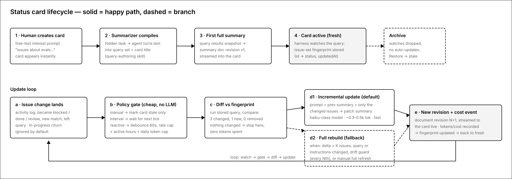
1.Status cards board
The new experimental page (sidebar entry appears only when the flag is on). A grid of cards, each an agent-maintained summary of an issue set you described in plain language. Six cards show the main states at a glance.
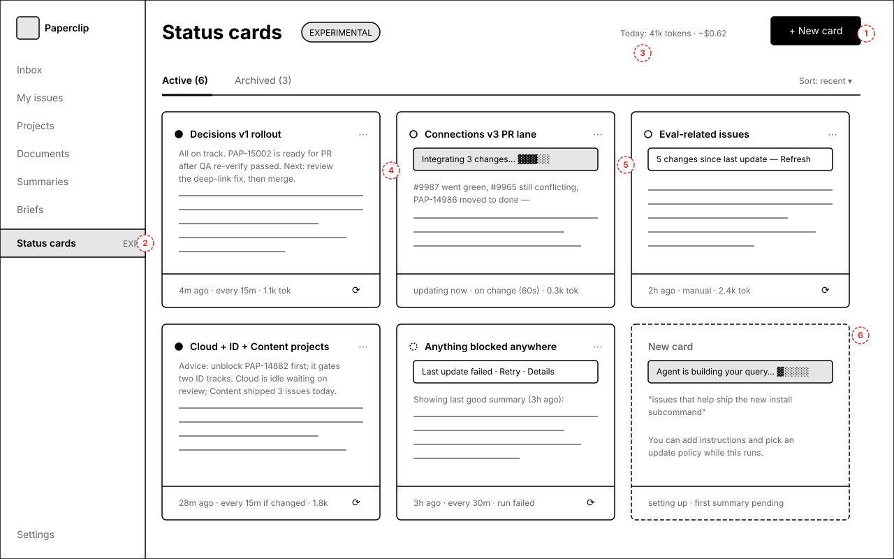
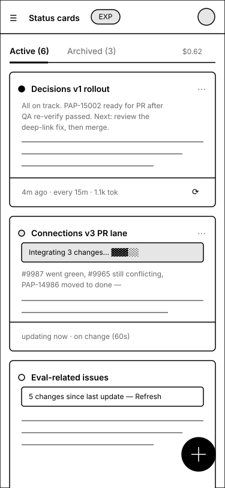
Annotations
- 1 — Page-level cost meter: today’s tokens/$ across all cards — cost visibility is a first-class requirement.
- 2 — New nav entry under the experimental section, next to Summaries and Briefs.
- 3 — Stale card: shows a “N changes since last update” strip instead of silently going out of date; click = refresh.
- 4 — Updating card: the old summary stays readable while the incremental delta streams in at the top.
- 5 — Card footer: freshness · policy · today’s tokens, plus one-tap manual refresh.
- 6 — Just-created card (dashed): query compiles in the background; the card is usable immediately.
2.Create a card
One required field. The human describes the issue set in plain language; the Summarizer agent compiles it into a persistent structured query (a set of company-search queries) in the background. No query syntax is exposed here.
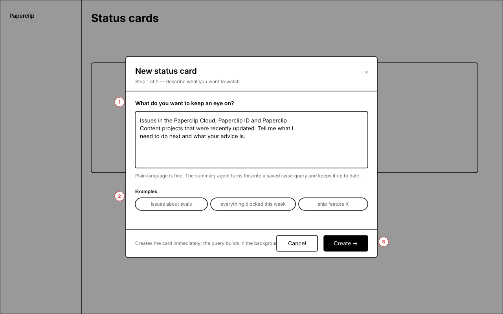
Annotations
- 1 — Free-text interest prompt — the card’s source of truth. Editing it later triggers recompilation.
- 2 — Example chips seed the mental model of what’s expressible (topics, projects, goals, statuses).
- 3 — Create is instant and optimistic: the card exists immediately in “compiling” state; step 2 is optional.
3.Configure while compiling
While the agent builds the query, the human can add summarizer instructions (append to the default prompt, or replace it entirely — both offered for the experiment) and pick an auto-update mode. A live strip shows compile progress and the agent-proposed title.
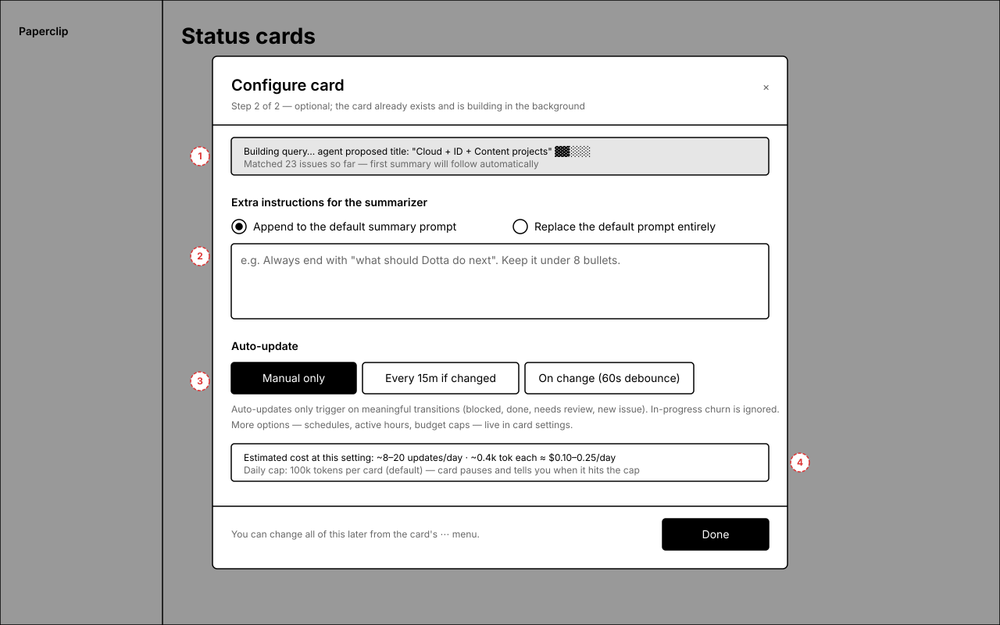
Annotations
- 1 — Background progress strip: proposed title + matched-issue count appear as the agent works.
- 2 — Append vs replace instructions — append keeps the default “Decide / Recent work” format; replace hands over the whole prompt.
- 3 — Cost preview: the chosen policy translates into an estimated updates/day and $ range, plus the default daily cap.
- 4 — Everything here is editable later from card settings; Done just closes the modal.
4.Card detail drawer
Click a card to open the full view: complete summary, the exact changes integrated into the latest update, watched-issues list, revision history, and per-update token/cost lines.
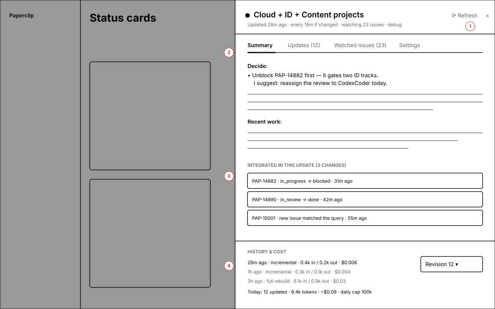
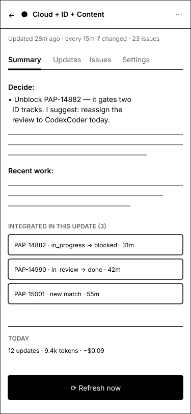
Annotations
- 1 — Header meta: freshness, policy, watched-issue count, and a debug link (experiment-only).
- 2 — Summary keeps the existing Summarizer format (Decide: / Recent work:) unless instructions replaced it.
- 3 — “Integrated in this update” makes incremental updates auditable: exactly which transitions the agent saw.
- 4 — History & cost: per-update model tier, tokens in/out, and $ — incremental vs full rebuild is visible.
5.Auto-update policy
The Settings tab answers “how do these cards refresh automatically?”. Three modes, a change-significance filter, and two guardrails. All auto modes are change-gated: no change, no agent run, zero tokens.
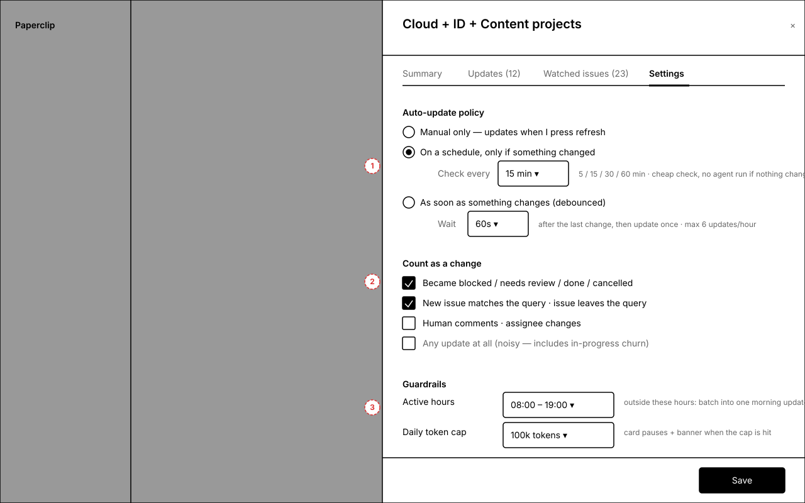
Annotations
- 1 — Three modes: manual · scheduled-if-changed (5/15/30/60 min) · reactive with a 60s debounce and an updates/hour rate cap.
- 2 — “Count as a change”: meaningful transitions (blocked / review / done / new match) on by default; in-progress churn and raw updates off by default.
- 3 — Guardrails: active hours (outside them, changes batch into one morning update) and a per-card daily token cap that pauses the card visibly.
6.Query debug view
Experiment-only surface for tuning the text→query compiler. Shows the human text (source of truth), the compiled query set with version history, and a dry-run of current matches. Normally hidden behind the debug link.
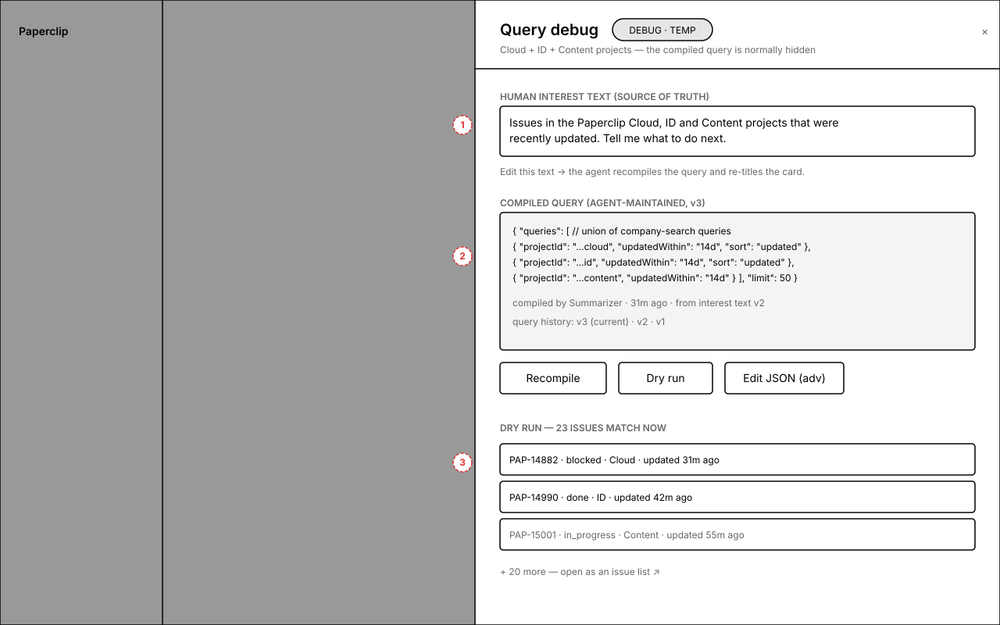
Annotations
- 1 — Interest text on top — editing it recompiles; the query is derived data, never the thing the human maintains.
- 2 — Compiled artifact: a set of structured company-search queries (union semantics), with compiler version + provenance.
- 3 — Dry run executes the stored query instantly (no LLM) so you can verify the agent compiled the right thing.
7.Card anatomy & states
Not a screen — a reference sheet. Left: every element of a card. Right: the seven lifecycle states (compiling, fresh, stale, updating, error, paused, archived) and how each renders.
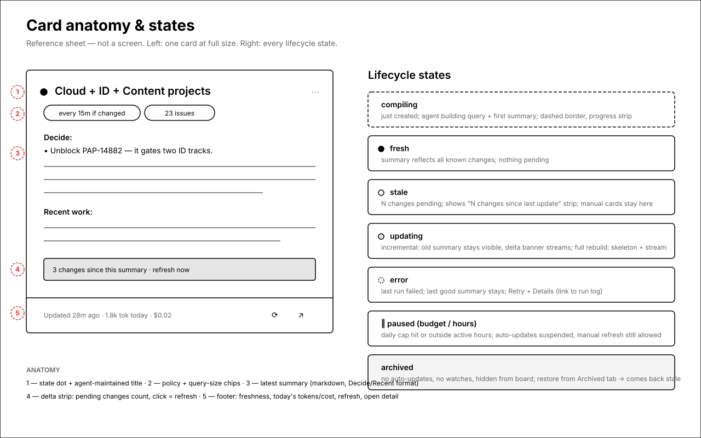
Annotations
- 1 — State dot + agent-maintained title (auto-created at compile, re-titled on query change).
- 2 — Chips: update policy and watched-issue count.
- 3 — Latest summary in the standard format; delta strip when changes are pending.
- 4 — Error and paused states keep the last good summary visible — a card never goes blank.
- 5 — Footer is the cost surface: freshness, today’s tokens/$.
8.Archived cards
Archiving fully disarms a card: watches dropped, no auto-updates, nothing spent. The Archived tab lists them with lifetime cost; Restore re-arms the query and brings the card back stale (never a surprise auto-run).
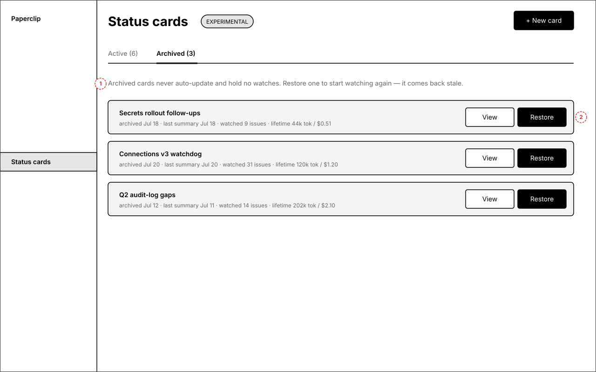
Annotations
- 1 — Explainer states the contract: archived = zero background activity.
- 2 — Restore is explicit and returns the card in the stale state — the next update only happens when you ask or the policy fires after you’ve seen it.
Open questions
- Default policy — proposal: new cards default to "manual + stale indicator" (spends nothing until opted in). Or should the default be 15-min change-gated?
- Model tiering — incremental updates on the Summarizer's default haiku-class model; should full rebuilds use a bigger model, or stay uniform and cheap?
- Sharing scope — v1 cards are per-creator but visible company-wide on one shared board (like summary slots). Do you want private boards/per-user pages instead?
- Reactive floor — is a 60s debounce + 6 updates/hour cap the right "as fast as it gets" ceiling for v1?
- Card sizes — v1 is a uniform grid; do you want resizable/pinned cards (1×/2× widths) now or later?
- Agent-created cards — the API will allow agent authorship from day one but the UI won't expose it in v1. OK?